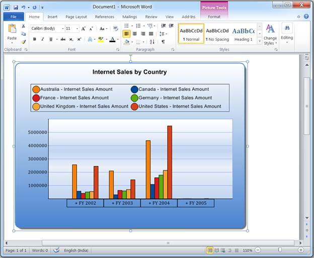

The Olap Chart control can be exported to a Word doc file as an image using Essential DocIO. The chart control provides APIs to convert it to an image, while DocIO lets you insert this image into a Word document file programmatically.
The chart can be exported in five different formats namely:
4. Create a new file and simply insert the image and save it as given in the following code snippets:
|
[C#] this.olapChart1.ExportToDoc("Sample.doc"); |
|
[VB] Me.olapChart1.ExportToDoc("Sample.doc") |
2. Look for the default marker and insert the image there. If the marker is not found, then insert it at the end of the document.
|
[C#] this.olapChart1.ExportToTemplateDoc("Sample.doc"); |
|
[VB] Me.olapChart1.ExportToTemplateDoc("Sample.doc") |
3. Look for this custom marker string and replace it with the image.
|
[C#] this.olapChart1.ExportToTemplateDoc("Sample.doc", "Exported Chart"); |
|
[VB]Me.olapChart1.ExportToTemplateDoc("Sample.doc", "Exported Chart") |
4. Export the chart in the given document file.
|
[C#] WordDocument m_document = new WordDocument("Sample.doc"); this.olapChart1.ExportToTemplateDoc(m_document); |
|
[VB] Dim m_document As WordDocument = New WordDocument("Sample.doc") Me.olapChart1.ExportToTemplateDoc(m_document) |
5. Export the chart in the given document file, in which the chart can be replaced by the custom marker string.
|
[C#] WordDocument m_document = new WordDocument("Sample.doc"); this.olapChart1.ExportToTemplateDoc(m_document, "Exported Chart"); |
|
[VB] Dim m_document As WordDocument = New WordDocument("Sample.doc") Me.olapChart1.ExportToTemplateDoc(m_document, "Exported Chart") |

Figure 47: Exported to word document
Table 26: Exporting to Word Document
|
Methods |
Description |
Parameters |
Type |
Return Type |
Reference Link |
|
ExportToDoc(String fileName) |
Exports a chart into a new Word document file with the specified file name. It takes the file name as a parameter. |
string |
Server side |
void |
- |
|
ExportToTemplateDoc(String fileName) |
Exports a chart into a new document file with the specified file name. |
string |
Server side |
void |
- |
|
ExportToTemplateDoc(String filename, String markerString) |
Exports a chart into a new document file with the specified file name and also adds the marker string within the document. |
string, string |
Server side |
void |
- |
Sample Location
A sample demo is available at the followinglocation:
..\Syncfusion\EssentialStudio\<Version Number>\BI\Web\OlapChart.Web\Samples\3.5\ Exporting\Exporting Chart Demo\